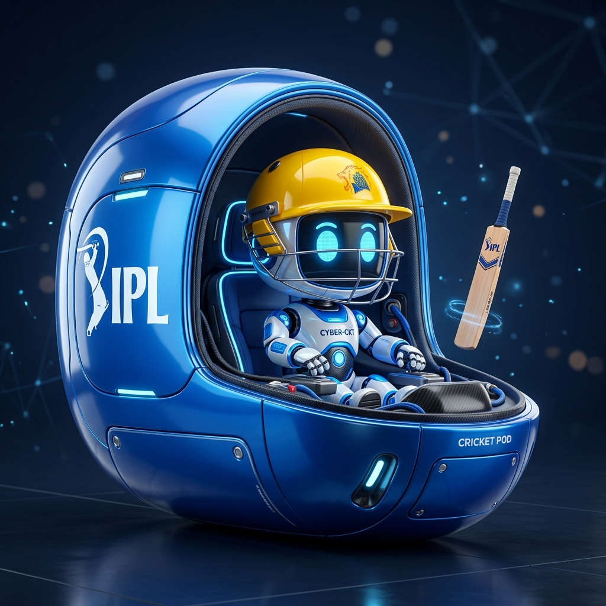

Think of any IPL cricketer from any season. The Gemini-powered AI
will analyse your answers and identify the player in 8-12 smart questions (or more if needed!).
250+
Players
AI
Gemini Brain
8-12+
Questions
17+
IPL Seasons
🎯 Challenge the AI — can you confuse it?
Think of an IPL player, I will guess who it is! ✏️

🛡️ 100% SAFE & PRIVATE
⚡ INSTANT AI ANALYSIS
🔒 BUILT ON GEMINI AI
🎯 HAWKEYE PREDICTION
MS Dhoni · 94%
Virat Kohli · 88%
Rohit Sharma · 91%
Jasprit Bumrah · 86%
AB de Villiers · 89%
Hardik Pandya · 83%
👥
250+ Players
From IPL legends to modern superstars. Every season, every franchise covered.
🧠
Gemini AI Brain
Dynamic questions powered by Google Gemini and probability reasoning.
📊
Live Stats
Track real-time confidence, entropy reduction and candidate pool.
🏏
Self-Learning DB
Wrong guess? Add the player! The database grows with every correction.
HOW TO PLAY
🤔
Think
Pick any IPL player from any season in your mind
💬
Answer
Respond Yes / No / Maybe / Don't Know to AI questions
🔍
Analyze
AI narrows the 250+ player pool in real time
🏆
Guess
AI reveals your player — rate its accuracy!
Question Progress0 / 12
🎯
Confidence
0%
👥
Candidates Left
248
🤖
Keyboard: Y = Yes | N = No | M = Maybe | D = Don't Know